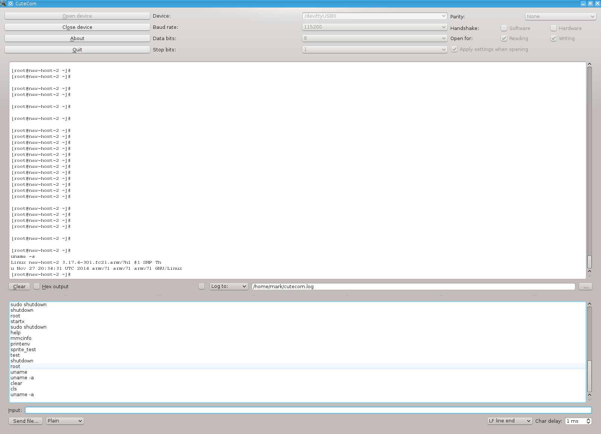

Cubie Truck
Loading Fedora Core 21 Linux on Serial Interface
Using Cutecom and the serial interface cable, I was able to boot Fedora Core 21 Linux.
However, it would not start up in VGA mode, and I didn't have an HDMI monitor available.
Attempts to start Fedora 21 when the CubieTruck was connected to my TV in HDMI mode also proved
unsuccessful. After a week of trying different things, I decided to wait for a VGA build of Fedora 21
to come out, as I wanted to work on other current projects.
Many attempts at reflashing the NAND and MMC memory cards, and editing configuration files did not prove successful.
Also, I have wiped away Android from the NAND flash memory in my attemp to get Fedora 21 to boot up in VGA mode.
It is not a big deal since I never wanted the CubieTruck to be an Android box in the first place.
Since it is too underpowered to act as a server for this webiste, I decided to make it my dedicated HAM radio computer.
I have also installed an 80GB SATA 2.5" harddrive into the case and am currently running Cubian X as the OS.
Cubian X comes preset for VGA mode, and was no problem getting up and running.
Overall, it was an excellent learning experience trying to get Fedora 21 up and running.
I had to consult many books and websites to get things done, and the amount of things I learned about
my prefered Linux of choice (Red Hat Fedora Core) is invaluable. I hope to one day earn a
Red Hat Ceritified Engineer (RHCE) certification:
Red Hat Ceritified Engineer (RHCE) certification details
This is the course that I want to take. It is available as online training:
Red Hat Ceritified Engineer (RHCE) certification course details
I will now post details of my attempts at starting Fedora Core 21 on the CubieTruck in VGA mode.
Serial Output Showing Fedora Core 21 Booted on CubieTruck

Image of Serial Output
Cutecom log file of Fedora Core 21 booting up. Data captured on host computer over USB to serial interface cable
Cutecom log file of Fedora Core 21 booting up.